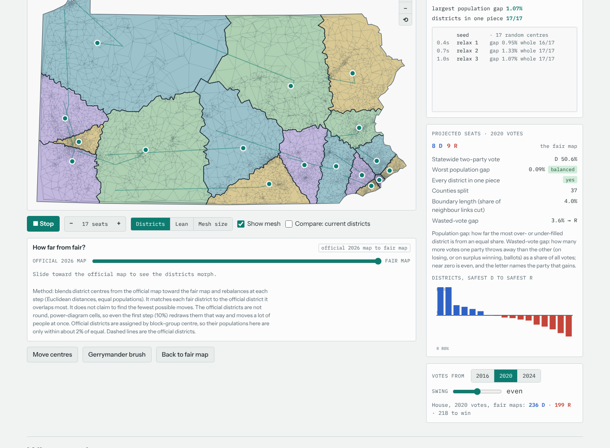
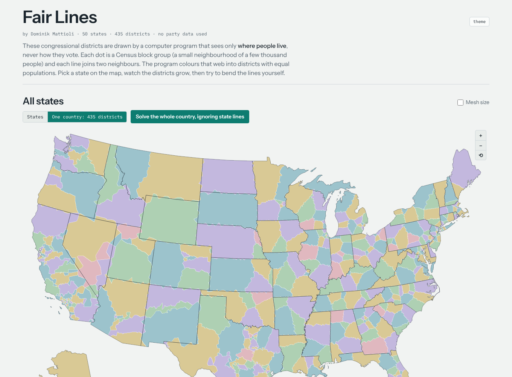
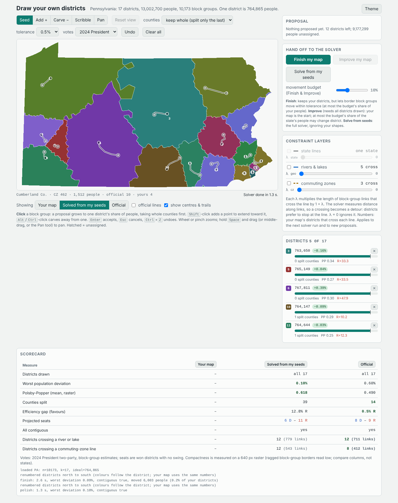
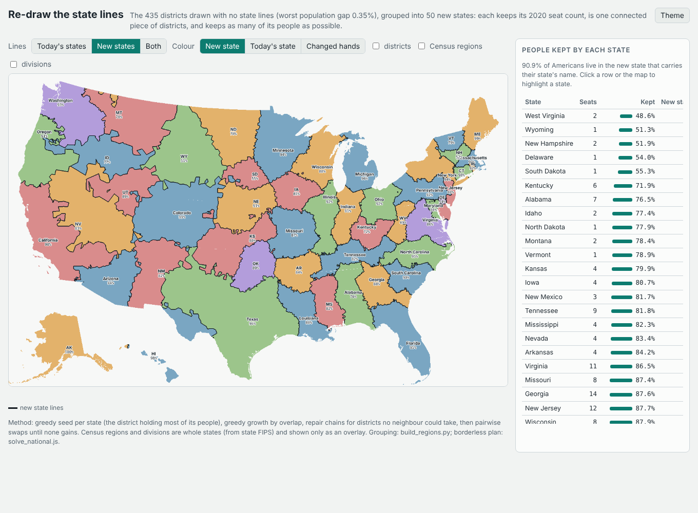

Toy 1
State solver
Pick any state and get a fair plan. A least-change slider morphs it toward the official map and shows how many people must move.

Toy 2
Borderless US
The same solver across the whole country: 435 equal-population districts that ignore state lines. Open the page and choose "One country".

Toy 3
Draw your own
Click a block group and a district grows from it. Then Finish, Improve or Solve from your seeds, and compare against the official map.

Toy 4 · in progress
Re-draw the states
Regroup the borderless districts into 50 new contiguous states.